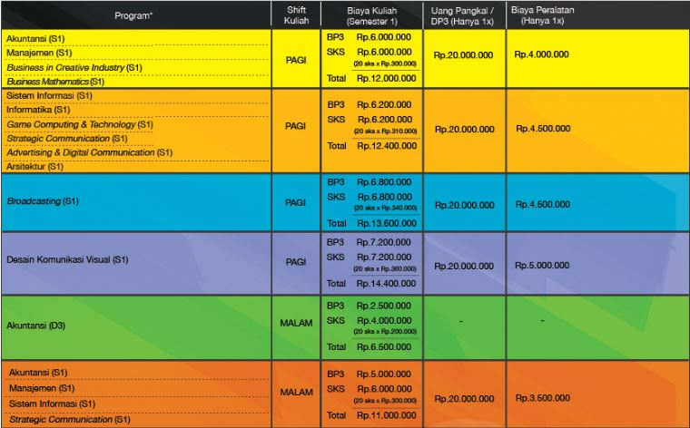

-

Pendaftaran Online Kalbis Institute
Untuk Calon Mahasiswa Baru!
Pilih jalur pendidikan Anda sekarang juga!
-

Penerimaan Mahasiswa Baru Kalbis Institute
Dari tanggal 1 Agustus 2019 - 20 Agustus 2019
Biaya Perkuliahan

Informasi Jurusan
-
Akuntansi
Prospek Pekerjaan:
Accounting Staff, Finance Staff, Intern Audit Staff, Taxation Staff, Junior Auditor, Finance Analyst
-
Manajemen
Prospek Kerja:
Entrepreneur, Marketing Manager, Professional in Marketing Area, HRD, Manager, Business Planner, Finance Manager, Business Analyst, Human Resouces Specialist, Management & Business Consultant, General Manager, Researcher
-
Business In Creative Industry
Events Manager, Entertaiment Marketing Professional, Advertising Professional, Internet Professional Marketer, Media Industry Specialist, Organizational Communication Specialist, Entertaiment Business Professional, Creative Entrepreneur
-
Matematika Bisnis
Prospek Kerja:
Aktuaria, Perbankan, Teknologi Informasi, Riset Operasi, Peneliti Konsultan, Jasa Keuangan
-
Sistem Informasi
Sistem Informasi
Business Process Analyst, System Analyst, IT Manager, IT Consultant, Database Design & Administrator, Technopreneur, Web Analyst and Designer, IT/IS Auditor, Database Analyst, Database Engineering
-

Informatika (TI)
Prospek Kerja:
IT Consultant, IT Support, System Analyst, Software Engineer, Application Developer, Researcher, Technopreneur, Educator/Trainer/Lecturer
-

Game Computing & Technology
Prospek Kerja:
Game Designer, Game Developer, Technopreneur, Educator/Trainer/Lecturer
-
Strategic Communication
Prospek Kerja:
Public Realtions Manager, Corporate Communication Manager, Corporate Social Responsibility Manager, Corporate Secretary Manager, PR Consultant, Media Relation Manager, PR Researcher
-
Advertising and Digital Communication
Prospek Kerja:
Digital Copywriter, Media Digital Strategic, Advertising Planner, Account Executive, Advertising Researcher, Media Planner
-
Arsitektur
Prospek Kerja:
Architcturek, Contractor, Housing Developer, Architcture Consultant, Educator/Trainer/Lecturer
-
Desain Komunikasi Visual (DKV)
Prospek Kerja:
Graphic Designer, Logo Designer, Illustrator, Typhographer, Comic Artist, Web Designer, Digital Imaging Artist, Letterer, Art Director, Creative Director, Creative Entrepreneur, Animator, Icon Designer, UI/UX Designer
-
Broadcasting
Prospek Kerja:
TV/Radio Announcer, Video Jurnalist, Executive Producer, Production Manager, Program Director, Floor Director, Media Researcher, Camera Person Coordinator